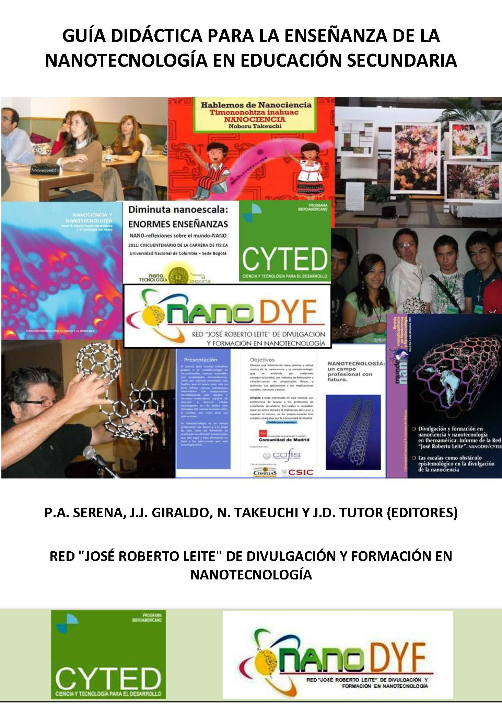

ESR fellow from UoI participates in the conference on radiological physics "Dětenický experiment" (Czech Republic, 25-27th March 2015)
- Created on 26 March 2015

Martin Sefl, RADDEL ESR fellow from University Of Ioannina (Greece), is participating in the conference "Dětenický experiment" on Radiological Physics that is taking place from the 25th until the 27th March 2015 in Dětenice (Czech Republic). Martin's oral presentation is entitled:
"Cellular S values calculated using Geant4-DNA"
He will present the results obtained during his RADDEL project so far, including cellular S-value dosimetry simulations for different cell-phantom geometries (sphere, ellipsoids, and irregular shapes) using Geant4-DNA (version 10.0.p02) Monte‐Carlo toolkit for the Auger‐emitting radionuclides: I-125, In‐111 and Tc‐99m.
The conference is organised by the Department of Dosimetry and Application of Ionizing Radiation of the Faculty of Nuclear Sciences and Physical Engineering, the Czech Technical University in Prague, and the Na Homolce Hospital in Prague.

Congratulations Martin!
NANOBIOAPP2015: Latest Advances on Nanomaterials for Biomedical Applications (21-23 September 2015, Barcelona - Spain)
- Created on 19 March 2015

The conference on "Latest Advances on Nanomaterials for Biomedical Applications" (NANOBIOAPP2015) will be held in Barcelona (Spain) on the 21st-23rd September 2015. The scope of the conference is to bring together experts in the field of organic (lipids, liposomes, vesicles, etc.) and inorganic (carbon, nanoparticles, quantum dots) nanomaterials to discuss the latest advances in their application to the biomedical field.
Keynote and invited speakers for the conference are top worldwide leading scientists. Their expertise ranges from the synthesis and characterization of the nanomaterials up to their in-vivo application. We will count with the presence of the Work Package leaders of “Health and Environment” of the Graphene Flagship, and a special lecture will be devoted to learn from recent advances, perspectives and opportunites in the biomedical field within the Graphene Flagship.
Finally, a satellite workshop will be devoted to the project RADDEL (“Nanocapsules for Targeted Delivery of Radioactivity”). Oral presentations will be delivered by the recruited fellows highlighting the research done throughout the training network.
For all the information of the conference, including invited speakers, abstract submission and registration please visit the conference's webpage (congresses.icmab.es/nanobioapp2015).
We look forward to seeing you in Barcelona for this special event!

CSIC participates in the "Teaching Guide for Education in Nanotechnology" by nanoDYF network
- Created on 17 February 2015
The nanoDYF network for popularization of science (http://www.nanodyf.org) has just published the “Guía Didáctica de Educación en Nanotecnología” (Teaching Guide for Education in Nanotechnology), made of introductory chapters and more than 25 Fiches divided in 5 major blocks, including complementary materials that will help the teachers at the school. Dr. Tobias, scientist-in-charge from CSIC and coordinator of RADDEL project, has participated in this Guide alongside 2 ESR fellows Markus Martincic and Magdalena Kierkowicz with a Fiche about Carbon Nanomaterials. The guide has been edited in CD format with ISBN-13 978-84-15413-33-2. 
RADDEL Newsletter 02 - February 2015
- Created on 02 February 2015
The second RADDEL Newsletter is available for downloading (please click on the image for the .pdf version). In the first part, an introduction about the project is given along with a description of the different parters participating in the consortium. Then, the fellows recruited so far throughout the network are introduced, including the research project they will be working in. Finally, a summary of all the meetings and training events that took place during years 2 and 3 of the project.
In the final issue an update of the training activities that the fellows are participating in will be included, along with information about recruitment, dissemination and outreach in relationship with the project. A summary of any scientific results obtained so far in the network will be also presented.
5-month ESR position available at UNITS
- Created on 22 January 2015
A 5-month ESR position is available at the University of Trieste (UNITS) in the frame of RADDEL project. The fellow will work on the functionalisation of filled carbon nanotubes for biomedical applications. For more information please check the job description here.